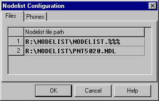
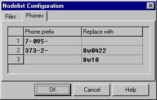

The Nodelist is a list of nodes working within an FTN network. The Nodelist is an official document within the network (see FTS-0005 document for more details). Argus can work with one or more defined nodelists as well as without any Nodelist at all.
The Nodelist is configured using Nodelist Configuration dialogue available in Config submenu.
Files
Files is a string grid for specifying file names of Nodelists and Pointlists used by Argus.
It is possible to use Wildcards and Regular Expressions in file names.
* |
any combination of one or more symbols |
? |
any symbol |
% |
any decimal digit ('0'-'9') |
Note that unlike other cases, Wildcards and Regular Expressions here are used not to select multiple files matching given Wildcard or Regular Expression but select only one file, newest from all matching.
The number of Nodelist files defined is not limited, neither is their overall size.
Argus will allow you to work without a Nodelist. In this case the 'phone numbers (IP-addresses) of nodes you're usually calling should be configured in the appropriate dialogue boxes.
The following is an example of a Files string grid with a standard FidoNet Nodelist and the Pointlist of net 2:5020:

'Phones
'Phones is the string grid of telephone numbers prefix conversion. If a 'phone number begins with a prefix specified in the 'Phone Prefix column, the prefix will be replaced with the contents of the “Replace With” part of the appropriate grid row. If there is no prefix specified in a grid row, all numbers except those converted with the grid rows above will be dialled with the prefix from the “Replace With” part of such a row.
This is an example of 'Phones string grid:

According to this table, prefix 7-095- will be replaced with an empty string (so 'phone numbers with this prefix will be treated as local), prefix 373-2- will be replaced with 8w0422, all other numbers will be dialled with 8w10- prefix. Thus, the 'phone number 373-2-146151 will be dialled as 8w0422146151, number 7-095-654321 - as 7654321, and the ''phone number 46-46-738100 will be dialled as 8w1046-46-738100.
Argus also checks nodelist.ok file-flag in its Home Directory and recompiles the Nodelist automatically.